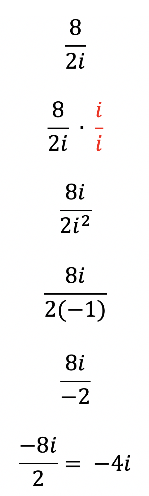

In this unit we will cover how to simplify rational expressions that contain the imaginary number, "i".
In order to simplifying complex numbers that are ratios (fractions), we will rationalize the denominator by multiplying the top and bottom of the fraction by i/i.
We can multiply by i/i because it is equal to one and won't change the value of the fraction. In the denominator, we will get i2, which we will replace with -1, which will rationalize our complex number.
You may remember rationalizing the denominator when you were working with square roots. The same process was carried out then, but we multiplied the numerator and denominator by the radical, or square root.
Rule: Any negative signs in the denominator must be moved to the numerator. Don't forget!
Let's look at some examples of Rationalizing Complex Numbers::

As you get more experience working with complex numbers, many of the steps in each problem can be combined to make solving the problems faster. Feel free to skip the steps you feel comfortable with! I show all steps with none skipped in the examples above. Hopefully that will make skipping steps faster to solve the problems for you.